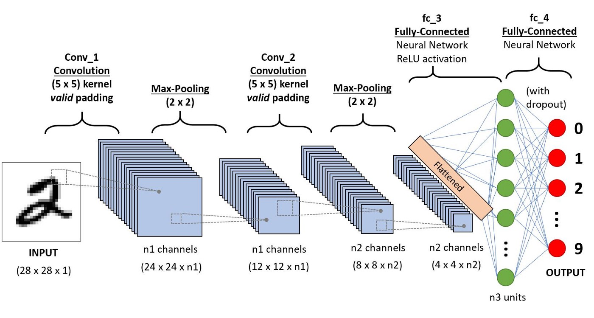

28.6. What is a convolutional neural network?#
Notes by Alberto Garcia (2021)
A convolutional neural network (CNN) is a machine learning algorithm that is useful for classifying images. It takes in an image as an input, assigns importance (through weights) to various features of the image such as objects, and learns how to differentiate between the images.
{kind=link}

Image taken from useful links #1.
Some useful links:
Why are traditional neural networks not enough?#
Although neural networks (NNs) are a great tool for making predictions, there are a few reasons why it is not wise to use NNs when dealing with images:
Multi-layer perceptrons use one perceptron per input. For images, one input would correspond to one pixel. If the image is 224x224, that is ~50,000 inputs. If the image is in color, that is x3 pixels, so 224x224x3 ~150,000. This means we’ll have ~150,000 weights per neuron that need to be trained…can lead to overfitting and slow training process.
NNs are not translationally invarient. If an important feature changes location in pictures, the NN will try to correct for that change. This leads to weights not being trained properly.
Why use convolutional neural networks?#
The influence of neighboring pixels is analyzed by something called a filter. This serves in reducing the dimensions of the weights by picking the important overall feature in sections of the image.
The pooling layer also serves as a way to reduce the dimensions.
CNNs are translationally invarient since they do not care exactly where the feature is in the image, but if the feature exists.
Different layers of a CNN#
Convolutional layer:#
This layer is used to extract features from the input image by use of a filter whose elements are weights that undergo a training process. These filters are typically 3x3 or 5x5 matrices that get convoluted with the image pixels. Even number filters are avoided since we want our feature maps to end up with a center cell. If it doesn’t there can be problems moving to the next layer. We will discuss greyscale images.
The size of the filters are much smaller than the size of the input image. The process of obtaining feature maps involves taking the scalar (dot) product between the image and the filter. By applying the same filter to an image, it allows the filter to discover features anywhere in that image (the translation invariance that was mentioned above). We can conclude that the filter allows us to see if a feature is present as opposed to where it is in the image.
The filters themselves are built from random numbers (from my current understanding) and get updated as the network is trained. There are certain filters that correspond to certain operations like edge detection and image sharpening. The output of a filter is a feature map. These are used to predict the class of each image. The number of filters used can be chosen. An example of the convolution operation is
First matrix element:
The outputted feature map is:
Once the convolution happens, the feature maps are stacked up. This represents the new image. These feature maps are then passed through an activation function which decides whether a certain feature is present anywhere in the image.
If we think about tradicional neural networks and the transition from input to hidden layer, the operation is
We have a similar operation in the convolutional layer of a CNN. In this case, the elements of \(\vec{X}_{\mbox{train}}\) is composed of the pixels of the input image and the elements of \(\vec{W}\) are the values of the filter. These get multipled in form of a scalar product, get summed up, and get passed into the activation function. In turn, each element of the feature map will go through the activation function. This amounts to the operation
As mentioned above, there are certain filters that pick out certain features. We do not concern ourselves with picking any specific filter. The point of the convolutional layer is to train the filters to recognize feature. The network is forced to learn how to properly extract features in order to minimize the loss. This is similar to neural networks where we compare the prediction to the true value. The error has to be below some threshold in order for the training to be complete. The completed “product” is a CNN with many filters that built in such a way that they pick out the most important features of an image in tandem to properly classify it.
How do we choose parameters for the convolutional layer?#
Examples:
network.add(layers.Conv2D(32,(3,3), activation=‘relu’, input_shape=(64,64,3)))
network.add(layers.Conv2D(64, (5,5), activation=‘relu’))
Input shape:
This corresponds to the size of the input image. In the example above the input image is size 64x64 and is in color.
Size of filter:
You want the filter to be small to pick up as many details as possible. Let’s start with the smallest choice, evaluate it’s use, and increase the size:
1x1
In picking a 1x1 filter, we will get a feature map that is essentially the same as the image and will not get information about neighboring pixels. This filter would be of no help!
2x2
Even dimensional filters are generally not preferred. The reason is that odd-sized filters are symmetrical about the middle element. An even-sized filter will not have this symmetry and can lead to distortions.
This leaves us with 3x3 and 5x5 being the smallest. These are the sizes used widely throughout CNNs.
Interesting addition: In the ImageNet Recognition challenge, Google introduced a CNN where they replaced the 3x3 convolutional layer with a 1x3 and 3x1 layer. So they split up the process into a series of one dimensional operations.
Number of filters:
There is no set way of choosing the number of filters. This is a hyperparameter that one must play with to see which is best for the dataset. The numbers chosen are usually powers of 2: 32, 63, 128, 256, 512,… etc. This has to do with how many threads are in GPUs. Normally a group is composed of 32 threads. If you have a convolutional layer with 40 filters, it will need 64 threads (2 groups). At that point you might as well take up all the threads possible.
Activation function:
Will be discussed in the next section.
More information can be found at:
Activation function#
Once we have a stack of feature maps, each value of the map is passed through a function known as the activation function. It is important to choose a non-linear activation function since the data one is passing into the network is usually non-linear. This will allow for the CNN to generalize better.
A function is chosen in order to set boundaries on the values passed through. This forces the values into a certain range and reduces the chances of the weights blowing up. The most used activation function in CNN (according to multiple articles) is the ReLU (rectified linear unit). The main reason for their usage is that they are cheap computationally and they throw out negative numbers. You’ll either get a \(0\) or \(1\) when computing the gradients, which make the training portion a lot faster compared to using sigmoid or tanh.
More information can be found at:
Pooling layer#
The function of the pooling layer is to reduce the size of the feature maps in order to reduce the amount of parameters needed, thus decreasing the computational time. These layers will operate on each feature map independently. Values from the feature maps are selected and are used as inputs for the subsequent layers. There are different ways to select these values. The common way of doing it is max pooling. This grabs the largest value using a pre-determined size. In addition, you can pick a stride. This tells the filter how to move across the feature map. For example, let’s consider a pooling layer with size 2x2 and stride 2
How do we choose the size of the pooling layer?#
The size of the pooling layer is usually chosen to be 2x2 or 3x3. The reason is because the point of the pooling layer is to reduce the size of the feature maps. As we increase our pooling size, we decrease the resolution. That’s why it is best to stick with 2x2 or 3x3 pooling size to not lose too many details.
Different types of pooling#
There are three popular ways of pooling: max, min, and average. Max pooling takes the maximum value in the matrix sub-block and throws away the rest. Min pooling takes the minimum value and throws away the rest. Average pooling averages all the values and takes that as the element. Which is better to use?
Min pooling:
Typically not good to use since you’ll be taking the smallest, least important pixel. This can usually just be noise.
Average pooling:
Not a bad choice to pick. This should give you a good scope of the image. The only issue is that the image will be smoothed (smeared) out and the sharp features will not be identified.
Max pooling:
This is the best and mostly commonly used choice because it chooses the most important features. The image is already being downsized by pooling so we need to make sure to choose the pixels that really capture the essential features of the image. These are usually the ones with the brightest (largest) number. This is not always the case! It all depends on your data.
More information can be found at:
Multiple color channels#
So far we have only discussed a greyscale picture. All pictures are three-dimenional inputs since they have pixels along the image and a color. For the case of greyscale the dimensions would be (for example) 32x32x1. This means it is effectively two-dimensional. When we have an image that is in color, the filter is three-dimensional, i.e. 32x32x3. So the CNN operate over some volume. This means that the filter will also be three-dimensional, as well as the rest of the pooling layer.
Flattening layer#
The flatten layer prepares a vector to be passed into the fully connected layer by transforming a two-dimensional matrix into a vector that is then fed into the dense layers. For example,
This will now be the inputs for a neural network.
Dense layer#
A dense layer is another phrase for a fully connected layer. This layer is a fully connected neural network. Each neuron in the network receives an input from all the neurons present in the previous layer (hence why they are called dense). A dense layer provides features from all the combinations of features from the previous layer.
Output layer#
This layer outputs the prediction. The function used in classification problems is usually the Softmax function. Softmax makes output sum to one so we obtain probabilities.
Categorical crossentropy loss#
Defined as
where \(y_i\) is the target value and \(\hat{y}_i\) is the scalar value in the model output.
For example
Loss total = loss for dog + loss for cat + loss for monkey
This type of loss function is to see how distinguishable two discrete probability distributions are from each other.
More information can be found at: